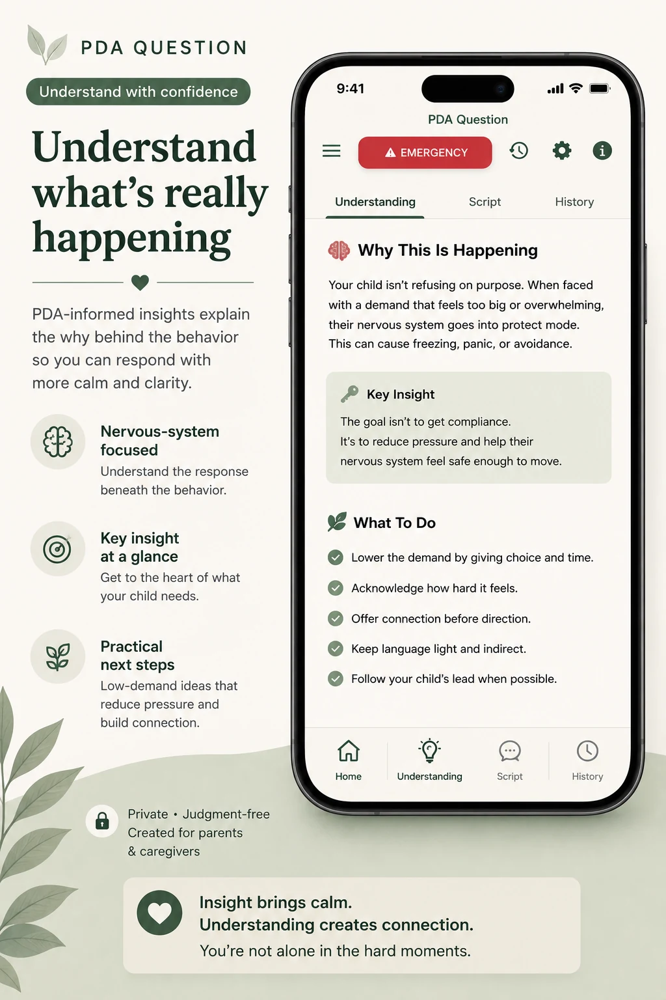

Organize observations
Gather what they are noticing before a conversation.
A practical tool families may use between conversations with teachers, therapists, and other support people.
PDA Question can help turn a difficult experience into clearer observations and lower-pressure language.
Gather what they are noticing before a conversation.
Consider language that preserves autonomy and reduces urgency.
Bring more focused questions to meetings or appointments.
Describe moments more clearly between school or support conversations.

PDA Question is not a clinical assessment, treatment, or diagnostic tool. Its responses are not evidence of professional consensus and do not replace professional judgment or individualized support.
Families should review app responses critically and share only what they find useful and appropriate.